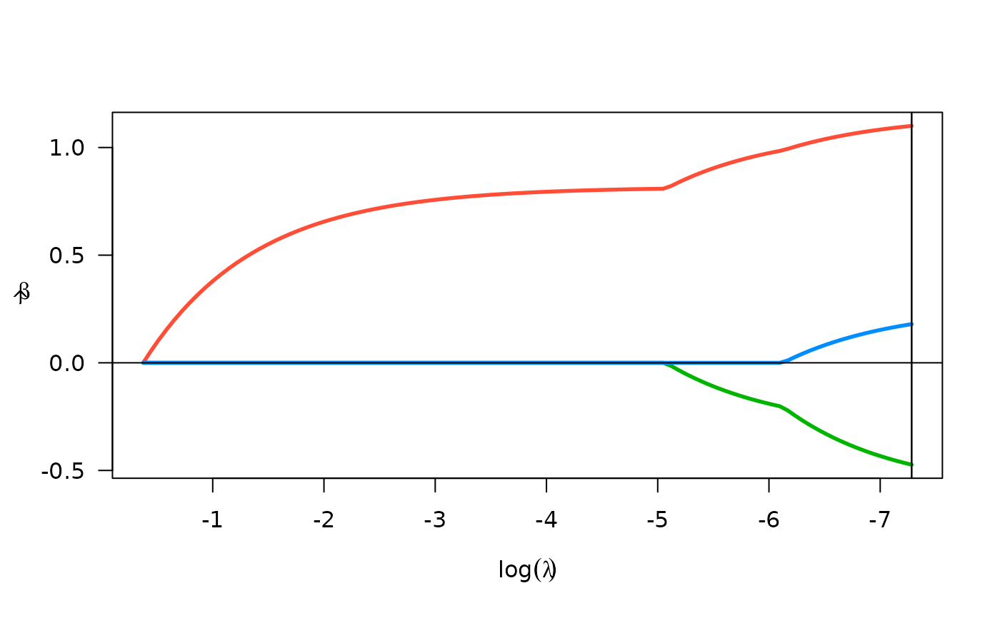

Uses penalized regression to quickly fit time series models with potentially complex seasonal patterns and exogenous variables. Based on methods described in Peterson & Cavanaugh (2024).
Usage
fastTS(
y,
X = NULL,
n_lags_max,
gamma = c(0, 2^(-2:4)),
ptrain = 0.8,
pf_eps = 0.01,
w_endo,
w_exo,
weight_type = c("pacf", "parametric"),
m = NULL,
r = c(rep(0.1, length(m)), 0.01),
plot = FALSE,
ncvreg_args = list(penalty = "lasso", returnX = FALSE, lambda.min = 0.001)
)
# S3 method for class 'fastTS'
plot(x, log.l = TRUE, ...)
# S3 method for class 'fastTS'
coef(object, choose = c("AICc", "BIC"), ...)
# S3 method for class 'fastTS'
print(x, ...)
# S3 method for class 'fastTS'
summary(object, choose = c("AICc", "BIC"), ...)Arguments
- y
univariate time series outcome
- X
matrix of predictors (no intercept)
- n_lags_max
maximum number of lags to consider
- gamma
vector of exponent for weights
- ptrain
prop. to leave out for test data
- pf_eps
penalty factors below this will be set to zero
- w_endo
optional pre-specified weights for endogenous terms
- w_exo
optional pre-specified weights for exogenous terms (details)
- weight_type
type of weights to use for endogenous terms
- m
mode(s) for seasonal lags (used if weight_type = "parametric")
- r
penalty factors for seasonal + local scaling functions (used if weight_type = "parametric")
- plot
logical; whether to plot the penalty functions
- ncvreg_args
additional args to pass through to ncvreg
- x
a fastTS object
- log.l
Should the x-axis (lambda) be logged?
- ...
passed to downstream functions
- object
a fastTS object
- choose
which criterion to use for lambda selection (AICc or BIC)
Value
A list of class fastTS with elements
- fits
a list of lasso fits
- ncvreg_args
arguments passed to ncvreg
- gamma
the (negative) exponent on the penalty weights, one for each fit
- n_lags_max
the maximum number of lags
- y
the time series
- X
the utilized matrix of exogenous features
- oos_results
results on test data using best of fits
- train_idx
index of observations used in training data
- weight_type
the type of weights used for endogenous terms
- m
the mode(s) for seasonal lags (used if weight_type = "parametric")
- r
penalty factors for seasonal + local scaling functions
- ptrain
the proportion used to train the model
x invisibly
a vector of model coefficients
x (invisibly)
the summary object produced by ncvreg evaluated at the best tuning parameter combination (best AICc).
Details
The default weights for exogenous features will be chosen based on a
similar approach to the adaptive lasso (using bivariate OLS estimates). For
lower dimensional X, it's advised to set w_exo="unpenalized",
because this allows for statistical inference on exogenous variable
coefficients via the summary function.
By default, a seasonal frequency m must not be specified and the
PACF is used to estimate the weights for endogenous terms. A parametric
version is also available, which allows for a penalty scaling function that
penalizes seasonal and recent lags less according to the penalty scaling
functions described in Peterson & Cavanaugh (2024). See the
penalty_scaler function for more details, and to plot the penalty
function for various values of m and r.
References
Breheny, P. and Huang, J. (2011) Coordinate descent algorithms for nonconvex penalized regression, with applications to biological feature selection. Ann. Appl. Statist., 5: 232-253.
Peterson, R.A., Cavanaugh, J.E. (2022) Ranked sparsity: a cogent regularization framework for selecting and estimating feature interactions and polynomials. AStA Adv Stat Anal. https://doi.org/10.1007/s10182-021-00431-7
Peterson, R.A., Cavanaugh, J.E. (2024). Fast, effective, and coherent time series modeling using the sparsity-ranked lasso. Statistical Modelling (accepted). DOI: https://doi.org/10.48550/arXiv.2211.01492
Examples
data("LakeHuron")
fit_LH <- fastTS(LakeHuron)
fit_LH
#> An endogenous PACF-based fastTS model.
#>
#> PF_gamma AICc_d BIC_d
#> 0.00 4.17 6.56
#> 0.25 3.34 3.54
#> 0.50 2.98 3.22
#> 1.00 1.06 1.24
#> 2.00 *0* *0*
#> 4.00 6.79 2.9
#> 8.00 6.79 2.9
#> 16.00 6.79 2.9
#>
#> AICc_d and BIC_d are the difference from the minimum; *0* is best.
#>
#> - Best AICc model: 4 active terms
#> - Best BIC model: 4 active terms
#>
#> Test-set prediction accuracy (20% held-out test set)
#> rmse rsq mae
#> AICc 0.7751 0.6043019 0.5888855
#> BIC 0.7751 0.6043019 0.5888855
coef(fit_LH)
#> 0.00069
#> (Intercept) 111.8740292
#> lag1 1.1003545
#> lag2 -0.4732437
#> lag3 0.1796316
#> lag4 0.0000000
#> lag5 0.0000000
#> lag6 0.0000000
#> lag7 0.0000000
#> lag8 0.0000000
#> lag9 0.0000000
plot(fit_LH)
